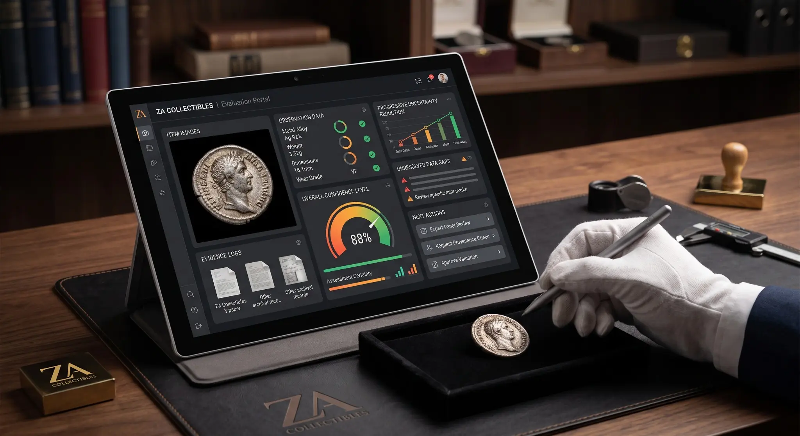
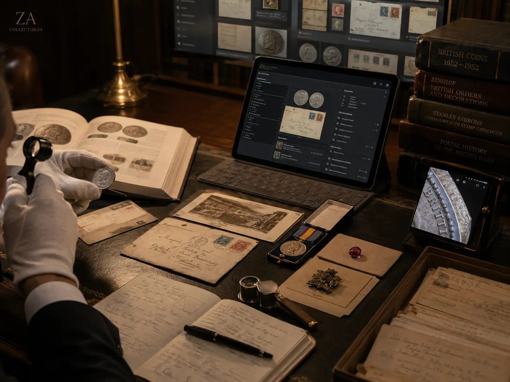
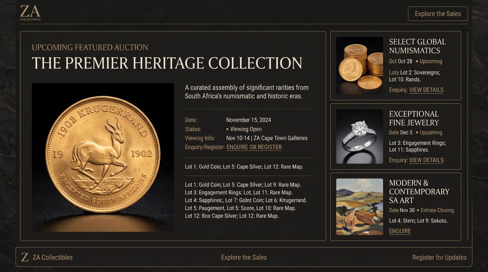
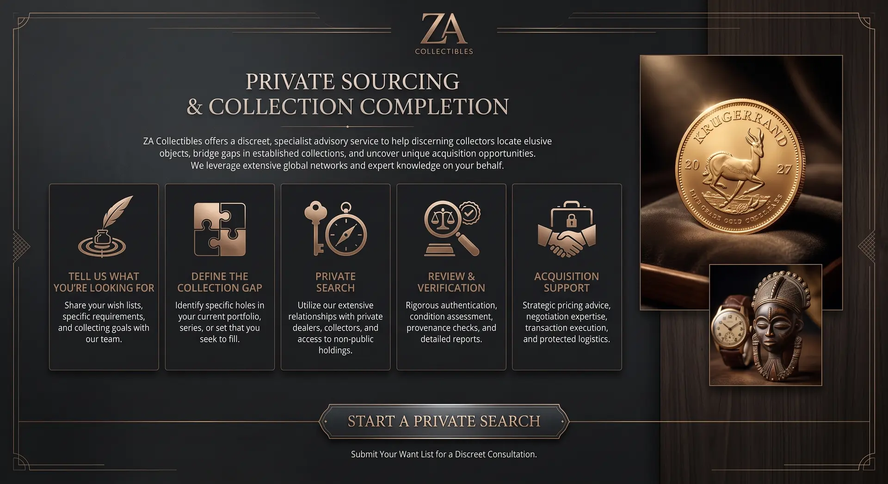
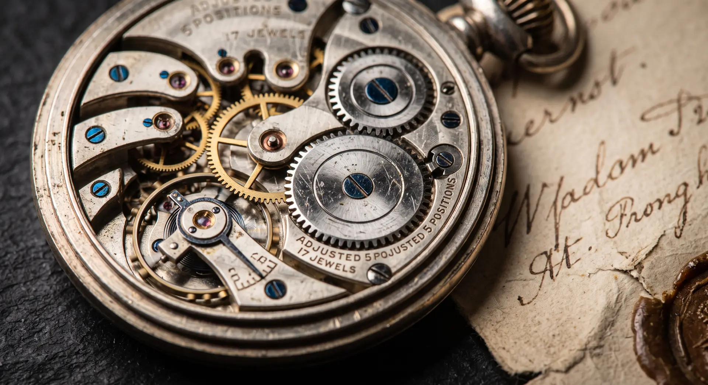

WhereCollectionsBecomeLegacy
ZA Collectibles helps people understand, acquire, sell, preserve and present collectibles whose history, material detail and meaning deserve proper attention.


Turn a Few Photographs Into a Useful Beginning
Identify, sort, find value signals, map what you own and discover which coherent collection, research problem or next decision the objects contain.
Experience the Future →
Objects and Collections in Motion
 Presentation Project
Presentation ProjectDifferent Needs. Equal Attention.

Appraisals & Evaluations
Identification, condition, authenticity risk and value interpreted for the client’s actual purpose.
Explore appraisals →
Research & Authentication
Marks, provenance, documentary evidence and specialist input brought together carefully.
Explore research →
Buying, Selling & Auctions
Direct purchase, private sale, consignment and auction routes selected for the item and objective.
Explore market services →
Private Sourcing
Want lists, candidate screening and discreet acquisition support for specific missing pieces.
Explore sourcing →
Collection Services
Inventory, mapping, gap analysis, documentation, collection building and succession planning.
Explore collection services →
Preserve & Present
Cards, dossiers, catalogues and cases that protect objects and preserve their context.
Explore presentation →Curious About an Item?
Marks reveal makers, periods and inconsistencies. Inclusions, facets and documents must agree.
Inclusions, facets and documents must agree. Paper, print, gum and cancellation carry evidence.
Paper, print, gum and cancellation carry evidence.Presented with Purpose.
Preserved for Generations.
Sometimes the most useful intervention is not another valuation. It is turning loose objects into a coherent collection with documentation, reference cards, archival presentation and a visual identity that makes the whole greater than the sum of its parts.
Explore presentation work →

Evidence Worth Keeping.
Why provenance changes what an object means →What the edge of a coin can tell you →The art of presenting a collection →
What Do You Have?
Send photographs, a list, a story or simply a question. We can help determine what deserves a closer look and what to do next.
Start a conversation →